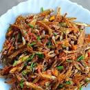

Omena Recipe

Description
This is the preparation of omena, a small species of food with a sweet spicy taste.
Ingredients
- Omena
- Royco spice
- Dania leaves
- Tomato paste
- 2 Onions
- Cooking fat
Steps
- Wash the omena/dagaa in some warm water.
- Dry the omena in a sufuria and save it in a plate.
- Fry the omena in a cooking dish with some cooking fat.
- Fry till its brown and crunchy and add onions.
- Fry it for two minutes and add tomato paste.
- Cook for 5 minutes and add salt and Royco spice.
- Add some dania leaves and cook for 2 minutes.